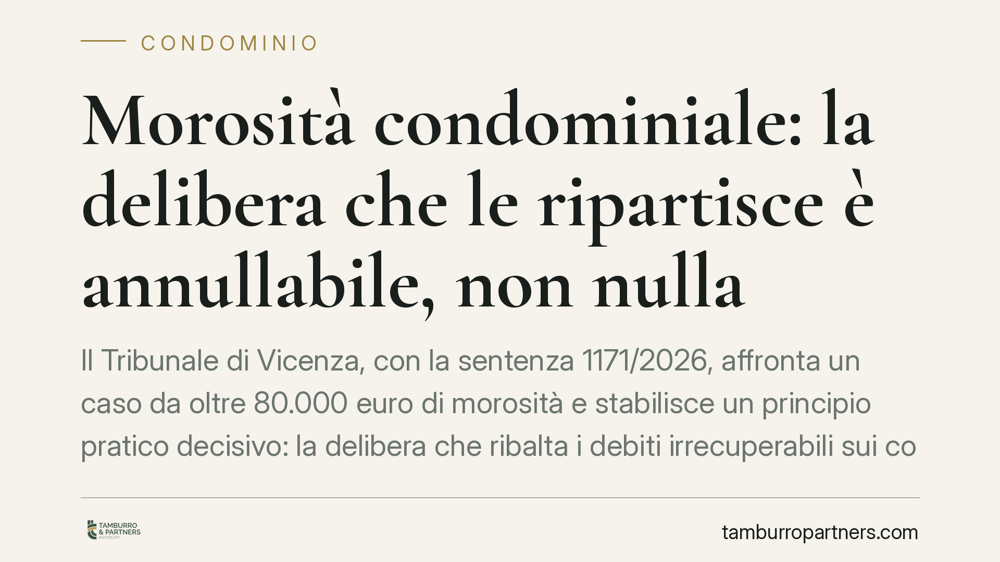

Morosità condominiale: la delibera che le ripartisce è annullabile, non nulla
Il Tribunale di Vicenza, con la sentenza 1171/2026, affronta un caso da oltre 80.000 euro di morosità e stabilisce un principio pratico decisivo: la delibera che ribalta i debiti irrecuperabili sui condòmini in regola non è nulla, ma solo annullabile. Chi non la impugna entro trenta giorni se la vede diventare definitiva. Un dettaglio tecnico con conseguenze economiche rilevanti.

Il caso
Un condominio vicentino si trova con una massa di morosità irrecuperabili pari a 80.562,49 euro. L'assemblea approva una delibera che ripartisce questi importi tra i condòmini in regola con i pagamenti. Due società proprietarie contestano la decisione.
La questione giuridica non è se la ripartizione sia corretta — non lo è — ma quale sia la conseguenza del vizio: la delibera è nulla o soltanto annullabile? La distinzione sembra accademica, ma determina chi paga e quando scatta la decadenza.
Inquadramento normativo
L'art. 1123 del Codice civile fissa la regola base della ripartizione delle spese condominiali: ciascuno contribuisce in proporzione al valore della propria proprietà, salvo diversa convenzione. Il principio implica che il debito del condòmino moroso resta suo. Gli altri non possono essere chiamati a coprirlo per effetto di una delibera assembleare.
Il punto delicato riguarda il regime di invalidità. La nullità colpisce le delibere prive degli elementi essenziali, con oggetto impossibile o illecito, o che incidono su diritti individuali indisponibili: è rilevabile in ogni tempo e da chiunque vi abbia interesse. L'annullabilità, disciplinata dall'art. 1137 c.c., riguarda invece i vizi meno radicali — tra cui la violazione di legge o di regolamento — e deve essere fatta valere con impugnazione entro trenta giorni. Decorso il termine, la delibera consolida i suoi effetti.
Il Tribunale di Vicenza colloca la ripartizione delle morosità nella seconda categoria. Addossare i debiti altrui ai condòmini in regola viola l'art. 1123, ma non tocca un diritto indisponibile né rende la delibera radicalmente nulla. Si tratta di una violazione di legge: vizio grave, ma sanabile per decorso del tempo.
Implicazioni pratiche
La conseguenza è netta. Se l'assemblea approva una delibera che sposta le morosità irrecuperabili sulle spalle di chi ha sempre pagato, quel condòmino ha trenta giorni per reagire. Non uno di più.
Chi lascia passare il termine resta vincolato a una delibera illegittima nel merito ma ormai definitiva. Non potrà più contestarla sostenendo che la ripartizione viola l'art. 1123: la decadenza ex art. 1137 chiude la porta.
Il ragionamento premia la stabilità delle decisioni assembleari. Il legislatore e la giurisprudenza prevalente considerano preferibile che, trascorso un periodo breve, la vita condominiale non resti esposta a contestazioni indefinite. Il prezzo di questa scelta è la diligenza richiesta al singolo: chi non vigila paga.
Attenzione al calcolo del termine. I trenta giorni decorrono dalla data della delibera per i condòmini presenti e dalla comunicazione del verbale per gli assenti. Un errore su questo punto può far perdere il diritto di impugnazione a prescindere dalla fondatezza delle ragioni.
Cosa fare in concreto
- Leggere il verbale subito. Appena ricevuto il verbale assembleare, verificare se vi sono voci di ripartizione anomale, in particolare addebiti di morosità altrui. Non rimandare.
- Calcolare il termine con precisione. Individuare la data da cui decorrono i trenta giorni — delibera o comunicazione del verbale — e segnarla come scadenza perentoria.
- Richiedere la verbalizzazione del dissenso. Se si è presenti in assemblea e si vota contro, far risultare espressamente il proprio voto contrario: è presupposto per impugnare.
- Valutare l'impugnazione senza indugio. Consigliamo di sottoporre la delibera a un professionista ben prima della scadenza, per decidere se procedere e con quali motivi.
- Conservare la documentazione contabile. Raccogliere prospetti di riparto, bilanci e comunicazioni dell'amministratore: servono a dimostrare la violazione dell'art. 1123.
La pronuncia vicentina non introduce un principio rivoluzionario, ma ribadisce una regola che molti condòmini scoprono troppo tardi. Un vizio di merito, per quanto evidente, non basta se manca la tempestività. In materia condominiale la tutela del diritto passa quasi sempre dal rispetto dei termini.
---
*Contributo informativo a cura di Tamburro & Partners - Avv. Giuseppe Tamburro. Non costituisce parere legale.*
Ogni condominio ha una storia a sé.
Se gestisci un'amministrazione e vuoi un confronto su una specifica questione condominiale, scrivi allo studio. Ti rispondiamo entro un giorno lavorativo.